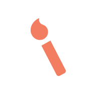
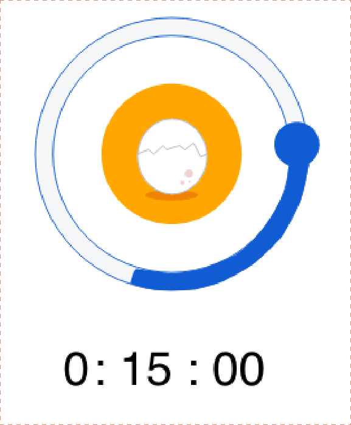

Pomodoro Planner - UX/UI
Overview
Pomodoro Planner is a mobile application designed
for iOS devices. The planner uses Pomodoro
technique to help students organise their study
time.
Tools Used


Skills acquired
- User research
- User testing
- Prototyping
- User testing
- Prototyping
Goal
To come up with a design solution that helps students
to build an habit of studying everyday and also help
them to stay away from distractions.
The Process

IDEATE
Affinity diagrams
Surveys
User Interviews
Surveys
User Interviews
DEFINE
User Personas
Scenarios
Information Architecture
Card Sorting
Scenarios
Information Architecture
Card Sorting

PROTOTYPE
Paper Prototyping
Wireframing
Hi-fi prototypes
Wireframing
Hi-fi prototypes
VALIDATE
Usability testing
User testing - observation
User testing - observation
Problem Statement
In a very competitive environment, it is very hard for students to keep up with their academics.
According to a recent survey conducted by Harvard, it has been estimated that 92% of the students
are distracted by social media which results in students losing their focus in academics which results in
failing to achieve their goals.
Understand the problem
From the problem statement, it is understood that I need to research about successful study
techniques and also interview students about their distractions to solve the problem and come up with
a solution in the form of a mobile application.
Ideate
The first step to solve any problem is to find who the target audience are to find that I created
what is already in the market (Competitor research)
and ask users about their problems and techniques
(Interviews and Surveys)
1-1 Interviews
Students want to spend time in actual studying rather than planning to in order to achieve their revision goals.
Competitor research
The apps in marjet only cncentrate on either helping students manually plan their study hours or measure how much they have spemt studying.
Survey
From the answer to the surcey questions, it has been concluded that social media apps and using the mobile phone in general while studying has served as a main distraction to students.
Takeway
From the above user research techniques, I analysed the user behaviour and their needs.
As a result of understanding who the user is and what they want in terms of the problem statement
I made user personas.
Define
From the above analysis its clear that the key problem to solve is to stop students from getting
distracted by other social media apps and also help them build an habit of studying
everyday. Also one of the major findings is that users spend most of the time planning what to study
and also analysing how much time they spent actually studying a certain subject. To solve
the issue of reducing the time planning, I decided to connect the app with Google Classroom which
will allow the app to access coursework from Google Classroom and display it directly
in the user goals page.

STEP1: QUEUE > ROUTINE > REWARD
To form a habit, it is important to analyse each of these behaviour. From Card Sorting with
users during the user research, I devised the mental model which gave me a deeper insight
On where I can concentrate in order to build a routine and also how to reward the user.
Mental Model
The app’s user flow looks like
STEP 2 : DESIGN SOLUTION - GAMIFICATION OF UI
(ITERATIVE PROTOTYPING AND TESTING)
(ITERATIVE PROTOTYPING AND TESTING)
From the mental model I identified that the queue is to make a student study regularly, to
make it a routine, I took to the idea of Gamification. As used by many applications, gamification
is a powerful technique to help users build routines in using a mobile app. As a part of gamification
rewards also follow in order to get the user hooked.
Goals page
The key role of the Goals page in the app is to showcase all the subjects the user has to study for a
particular day. Also show if a user has completed spending time studying a subject mentioned
along with the time taken to study. This page is the queue and routine builder in the app.
The different stages of sketching the Goals page for Pomodoro Planner
After sketching the ideas for a goals page roughly on paper, I used Freehand prototyping
tool provided by inVision to test the ideas with users by performing user-testing
(Behavioural observations and quantitative methods like surveys were used)

The different versions of freehand prototypes of Pomodoro Planner*
Using the feedback and observations from the usability testing with the above artefacts, the low-fidelity
prototype was designed and tested accordingly which finally paved way to design the high-fidelity
prototype.
Low fidelity wireframe of the Goals page
High fidelity wireframe of the Goals page
One of the main feedbacks and observations while testing the user interface of the high-fidelity prototype
Was the “Start timer” button, the main “Call to Action” button in the goals page did not
Gain the attention as expected. To solve the problem, I sort out to the colour theory,
In the comparison image below you can see that I have used a complementary colour for the start timer button.
This has solved the problem which is proven through another round of usability testing.
Clear CTA implemented by the use of a
Complementary colour
Complementary colour
User activity after changing the colour of the CTA button as seen during Usability testing done using Maze
The Timer
One of the key selling point of the app is the “Timer page”. This unique timer page is based on the
Time management concept called as the Pomodoro Technique
Pomodoro Technique : The technique uses a timer to break down work into intervals,
traditionally 25 minutes in length, separated by short breaks.
traditionally 25 minutes in length, separated by short breaks.
The timer can be started for only 25mins, 50mins, 75 mins and 100 mins. This technique is particularly
used in this scenario because it has been proven that taking short breaks in between studying/working
Actually improves productivity and by using this technique I wanted to prove that
Spending small chunks of time everyday on a particular subject regularly will improve the
academic performance by inculcating an habit of studying everyday.
However to achieve this, I made use of gamification by giving the user to use the timer to hatch a chick
While the timer is running. If the user fails to keep the timer running by getting distracted
Through other apps or notifications, the user fails to collect a chick and ultimately falls down in his
ranking board.
The reward - The chick and the race to collect the maximum number of chicks
The different stages of sketching the Timer page for Pomodoro Planner
From the above sketches, I combined the two ideas of a timer and tried to incorporate
gamification in the timer.

The different stages of Timer UI
One of the decisions that I took while developing the app, is to change the Timer from being displayed
As a page to a modal view as it can be started only from the goals page. This decision stopped
The user from getting frustrated about not having an option to start the timer in the timer page.
Feedback from users on how they felt about using the timer
Rewards page
The natural response for collecting anything is to compare it with other users. The rewards page is the
reward phase of a habit loop. The users are compared based on the number of chicks they have
collected among other users of the app.
Low fidelity wireframe of the Rewards page
High fidelity wireframe of the Rewards page
Feedback
“I like the animations in the timer, it motivates me to study without
switching to other apps because I do not want to kill the chick.”
“Its so easy that it connects to Google
Classroom directly,
Very smart idea.”
Classroom directly,
Very smart idea.”
“I like to know how much time I spend
Studying each subject and Pomodoro
Planner has it all.”
Studying each subject and Pomodoro
Planner has it all.”
Takeway
The design of Pomodoro Planner was iterative and I followed the Double Diamond method, this
helped me to shape the design solution to suit the needs of the user, also the reviews from the user
suggested that Pomodoro Planner is sure to induce a healthy habit of making people study everyday.